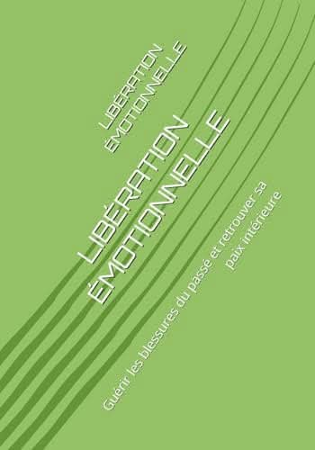
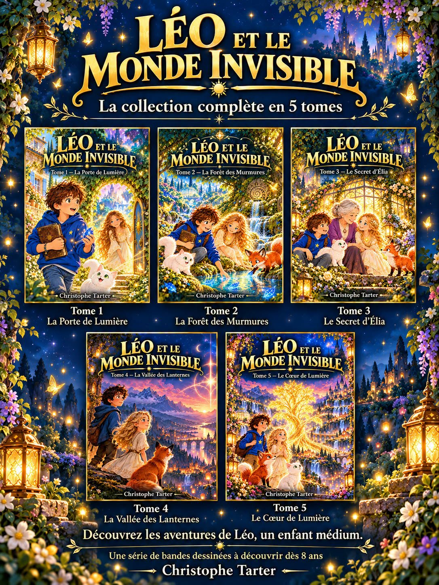

Mes livres et créations
Découvrez mes ouvrages, mes bandes dessinées et mes supports d'accompagnement et de développement personnel.
Quelques couvertures

Tu étais si petite, mais déjà si forte

Libération émotionnelle

Création littéraire et spirituelle
Léo et le Monde Invisible
Une série de cinq tomes pour suivre les aventures de Léo et de ses compagnons, dans un univers d'imagination et de découverte.

Les titres, éditions et liens d'achat pourront être complétés ou vérifiés avant publication.